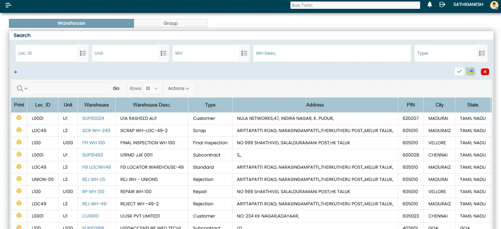
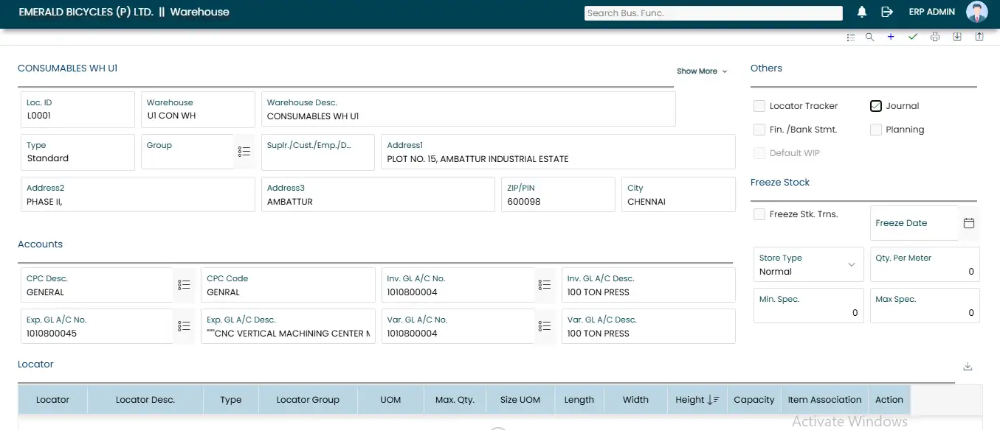

<div data-category="Inventory Control" data-title="Warehouse" data-updated="January 27, 2026" data-contributors="RoadmapIT" data-breadcrumb="Home,Inventory Control,Warehouse">
  <div class="page-content">
    <p>A warehouse is a storage facility where inventory items are kept until they are needed for sale or distribution. A warehouse can be a building, a room, a container, or any other space that can hold inventory. It can also have different zones or sections for different types of inventory, such as raw materials, finished goods, or items in production.</p>
    <p>Warehouse management involves various processes and tasks, such as:</p>
    <ul>
      <li>Receiving goods</li>
      <li>Storing goods</li>
      <li>Picking goods</li>
      <li>Packing goods</li>
      <li>Shipping goods</li>
      <li>Replenishing goods</li>
      <li>Auditing goods</li>
    </ul>
    <p>User can use this screen to define the Warehouse for the items. User cannot change or delete a Warehouse if it has any items linked to it. However, user can edit the Warehouse descriptions as needed.</p>
    <h5>Navigation path:</h5>
    <p class="fs-6">Supply Chain Management \ Inventory \ Setup \ Warehouse</p>
    
    <ul style="list-style-type: none; align-content: center">
      <li class="mouse-icon">Search screen displays the list of Warehouses with the relevant details</li>
      <li class="mouse-icon">User can filter the respective documents by entering the search parameters at the header.</li>
      <li class="mouse-icon">On clicking search button, system displays the results relevant to the search parameters entered.</li>
      <li class="mouse-icon">
        Using
        
        icon, entered search parameters can be cleared.
      </li>
      <li class="mouse-icon">
        To close the screen, use
        <i class="bi bi-x fs-4 mx-2 text-danger"></i>
        icon.
      </li>
      <li class="mouse-icon">
        Click
        <i class="bi bi-plus fs-4 mx-2 text-primary"></i>
        button to create a new Warehouse
      </li>
    </ul>
    
    <ul style="list-style-type: none; align-content: center">
      <li class="mouse-icon">Enter/Select Loc. ID; Unit and Address will be displayed automatically.</li>
      <li class="mouse-icon">Enter Warehouse.</li>
      <li class="mouse-icon">Enter Warehouse Description.</li>
      <li class="mouse-icon">Select Type.</li>
      <li class="mouse-icon">Select Supplier from LOV, if Type is selected as Supplier</li>
      <li class="mouse-icon">Select Customer from LOV, if Type is selected as Customer.</li>
      <li class="mouse-icon">Enter/Select Sales Area from LOV.</li>
      <li class="mouse-icon">Check planning flag for considering the warehouse during MRP run.</li>
      <li class="mouse-icon">Select saleable flag if the Warehouse is applicable for Sales.</li>
      <li class="mouse-icon">Select Planning flag if the Warehouse is applicable for Planning.</li>
      <li class="mouse-icon">Select Freeze Stk. Trans. Flag and enter the Freeze Date to prevent the transaction of the particular Warehouse from the date specified.</li>
      <li class="mouse-icon">Select the Locator Tracker flag, if the Warehouse is included for Locator Tracer.</li>
      <li class="mouse-icon">Select the Journal flag, if the warehouse is applicable for Journal creation for perpetual accounting</li>
      <li class="mouse-icon">
        Click
        <i class="bi bi-check-lg fs-4 mx-1 text-success"></i>
        to save the Warehouse.
      </li>
    </ul>
    <h2>Locators:</h2>
    <ul style="list-style-type: none; align-content: center">
      <li class="mouse-icon">Enter the Locator id and Description.</li>
      <li class="mouse-icon">Enter /select the Locator Group From LOV.</li>
      <li class="mouse-icon">After Enter the Group Description and UOM will be Automatically Displayed.</li>
      <li class="mouse-icon">Enter the Max Qty for Locator Group.</li>
      <li class="mouse-icon">Select the Locator Group Types ( Static, Buffer, Dynamic)</li>
      <li class="mouse-icon">Static (only store single Item)</li>
      <li class="mouse-icon">Dynamic (more than one item)</li>
      <li class="mouse-icon">Buffer (we can store multiple Items with Unlimited Quantity)</li>
      <li class="mouse-icon">Choose the Capacity Flag to declare the storage capacity of Locator.</li>
    </ul>
  </div>
</div>
